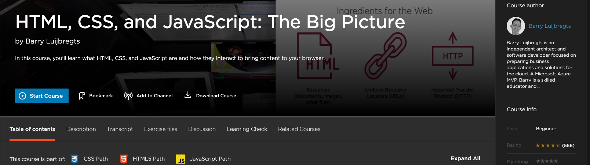
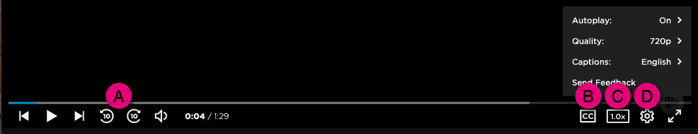

Google Africa Developer Scholarship 2021
.jpg)
Welcome to Pluralsight Skills-
the technology skils platform
About this program
Grow with Google and Pluralsight have partnered for the third consecutive year to
provide a program
to support software developers across Africa in three different roles:
- Associate Android Developer
- Associate Cloud Engineer
- Mobile Web Specialist
The Google Africa Developer Scholarship program has sponsored 45,000 aspiring developers in Africa to
skill
up with Pluralsight Skills, supported by the Google Developer community.
This program has multiple phases for you to gain access to excellent Pluralsight Skills courses as
well as support from the GADS program and the Google Developer Community. All of this is to help you
upskill on important Google technologies.
Keep learning and stay motivated
To continue advancing through the sessions to get access to more courses you’ll need to prove you’re dedicated to learning these tech skills. You can do this by:
- Registering for your selected track. Applicants will be placed in only one track as selected in the onboarding survey during registration.
- Completing all requirements to advance to the next phase
Advancing to each subsequent phase will help you master in-demand Google developer skills with expert-authored Pluralsight content. You'll gain skills that can help you get opportunities after the program.
Tip: If you watch a course or take a skill assessment during one of the phases, that activity counts toward the current phase as well as any future phases you may advance to.
Important:In order to participate in the Google Africa Developer Scholarship program, you must be at least 18 years of age and be a resident of a country in Africa. You may only register for one learning track/role.
Phases and advancement criteria
Application and promotion phase
Timeline: This phase has ended
What you get access to:
- Custom Pluralsight experience
- Curated Pluralsight channels, including Skill IQ
What you need to do to advance:
- Register for the program. Complete the onboarding survey as part of your registration process. Once you complete the survey, you will be redirected to register for Pluralsight.
Learning phase 1
Timeline: This phase is active
What you get access to:
- More content in the track you chose
What you need to advance:
- For all tracks, receive 100+ for the track-specific Skill IQ OR complete 10+ hours of track-specific content.
Learning phase 2
Timeline: To be determined
What you get access to:
- Even more content in the track you chose
What you need to advance:
- For all tracks, receive 200+ for the track-specific Skill IQ OR complete 20+ hours of track-specific content.
* Please note that Pluralsight and the other partners making this offer available
may change selection criteria at their discretion. Additional selection criteria may include first come,
first serve; most content viewed; highest Skill IQ.
In order to participate in the Google Africa Developer Scholarship program, you must be at least 18 years of age and be a resident of a country in Africa. You may only register for one learning track/role.
How to get started on Skills
1. Register, then log in to Pluralsight.
Note: You must complete the onboarding survey in order to register for this program.
First, choose your track during the onboarding survey. You will only be registered for the track you self-select.
Once you complete the survey, you will be redirected to a page where you can create a Pluralsight account. If you already have a Pluralsight account, use the email on that account to register, so you can keep your learning history. Then, to get started on Pluralsight Skills, log in and explore your custom homepage.
Tip: Not sure what your password is? Click here to reset your password, and we’ll email you a link to finish resetting your password. Here’s more password reset help if you get stuck.
Throughout the program, you'll receive emails from Andela with updates on the program. You’ll also receive email communications from Pluralsight about the platform.
2. Once you’re logged into Skills, use channels to guide your learning.
You'll find channels on your homepage in Skills. A channel is a grouping of courses centered around a specific technology or learning goal. Here's a list of all the channels and what they contain, as well as some recommendations on which order to watch content in. We've hand-picked these collections of courses to guide your learning.
You'll also see another channel, targeted at upgrading your technology career by building your professional business skills.
Keep reading for tips on skill assessments and our courses to get the most out of your Pluralsight access.
Take learning with you
Download courses onto your phone or laptop for learning on your schedule. Take Pluralsight with you and play courses offline. Click here to get the Pluralsight app
3. Skill up with skill assessments and course tools.
What are Pluralsight skill assessments? They’re a simple way to quickly measure a tech skill.
After taking a skill assessment, you'll get both a numeric score and a level of novice, proficient, or expert in a skill area—that’s your Skill IQ. You can even share your Skill IQ on social media, Stack Overflow, and LinkedIn.
After you get your Skill IQ, Pluralsight will give you a personalized skill analysis and recommendations on what courses to take to close your skill gaps.
Tip: Use your personalized skill analysis and recommendations to help you decide what to watch next. Still not sure? Check out our recommendations below.
Did you make a mistake, or want to take the assessment again? You get one free Skill IQ do-over, and you can also earn retakes by watching more courses. Here’s how.
Course learning tips
Each Skills video course details page has tools to help you succeed.
Begin each course by clicking Start Course. Below that button, you’ll find some of these extra learning aids:
- A clickable transcript of the course
Note: While many Pluralsight courses have transcripts, some do not. We are adding transcripts to courses every week.
- Exercise files to download. For some courses, this is a .PDF of the course slides; other course exercise files allow you to code along with the author.
- A Discussion board that allows you to post questions and learn along with other learners
- Some courses have learning checks that help gauge what you’ve learned from the course.
On the video player, be sure to notice these features:
A : Skip ahead or backward 10 seconds.
B : Most courses support closed captioning, or subtitles. If the course has closed captions, you can use our translation tool, also.
C : Speed up or slow down the course playback.
D : From the Settings cogwheel, adjust the video playback quality, caption language, and also give us feedback on the course.
If you're experiencing issues with playing videos, start by checking your connection and identify video playback issues using our video checkup tool.
Sometimes, internet bandwidth is not large enough to handle the demand. There are a few reasons why this might happen.
We find that most buffering issues occur when users switch from the Auto setting to a higher quality setting. The video player automatically detects bandwidth availability and adjusts play quality accordingly to keep a continuous stream. If you manually adjusted it to a higher quality setting, change it back to Auto.
Other reasons include an increased number of people watching Skills video content, the number of devices using your WiFi, or your WiFi connection not being strong enough.
If you are having buffering issues, you can:
- Make sure your WiFi router is centrally located
- Switch the video player setting to Auto
- Download the video using our native apps and offline player. Once your video is downloaded, you can watch the video without internet connection. Learn more about downloading courses here. Refer to our mobile and offline player help article if you have questions.
- Decrease the bandwidth demand by turning off internet devices
Learn more about video player troubleshooting tips.
What courses do I have access to with the Google Africa Developer Scholarship?
If you've registered and continued to qualify for access to the Google Africa Developer Scholarship program, please click your track below to see what channels and courses you have access to as well as which skill assessment(s) you should take for your specific track. Channels are lists of the courses you have access to, grouped by topic. Skill assessments allow you to gauge your skill level, identify gaps, and measure how your skills increase over time. We’ll add more courses to these lists for each phase as the program continues.
When you click on a channel, please click the blue Join button to add the channel to your My Channels list. This way, it'll be easier to find your channels.
To find these channels after you've joined them, click Channels in your navigation.
Note: You must join the channels if you watch courses on the the Pluralsight Android or iOS mobile app. Otherwise you won't be able to find your channels. After joining each channel on the web, you'll see them in the channels section of your mobile app homepage.
What order should I watch the courses in?
For each phase, you have a Foundations channel and a Deep Dive channel for your track. These channels have been broken into sections focused on specific parts of each technology in your track.
There is no required watching order for the courses in order to be eligible to advance to the next phase; however, we have created recommendations if you’d like more guidance to your learning. Otherwise, feel free to watch the courses in any order.
We recommend that you watch all the courses in the Foundations channel first in the order they’re listed. This will give you a broad and foundational understanding of important key principles in your track.
Once you’ve finished the courses in the Foundations channel, you should start watching courses in the Deep Dive channel based on what interests you from the Foundations channel and where you might have skill gaps. If you’re on the web version of Pluralsight Skills, you can see the channel has been broken down into sections to help you identify what you might like to watch next.